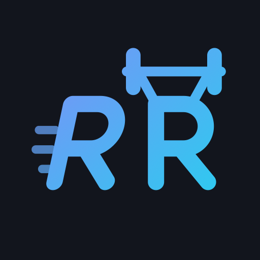
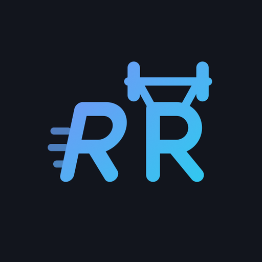
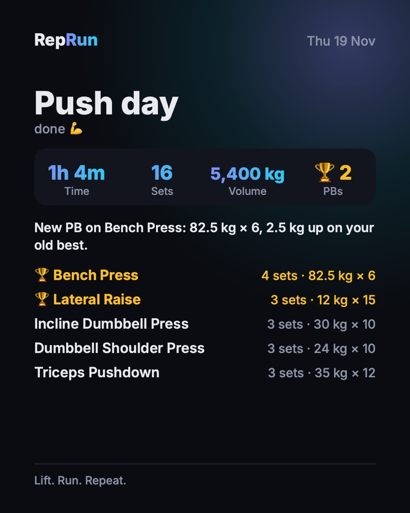
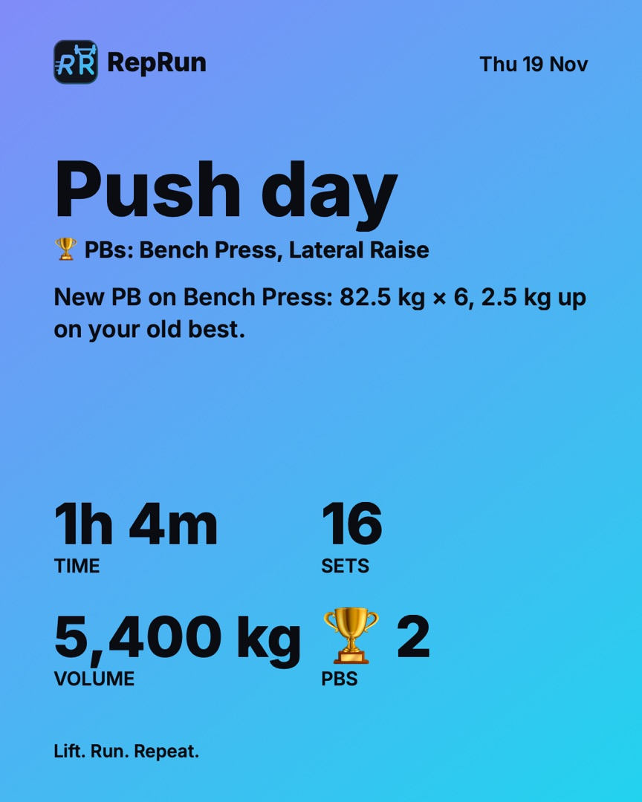
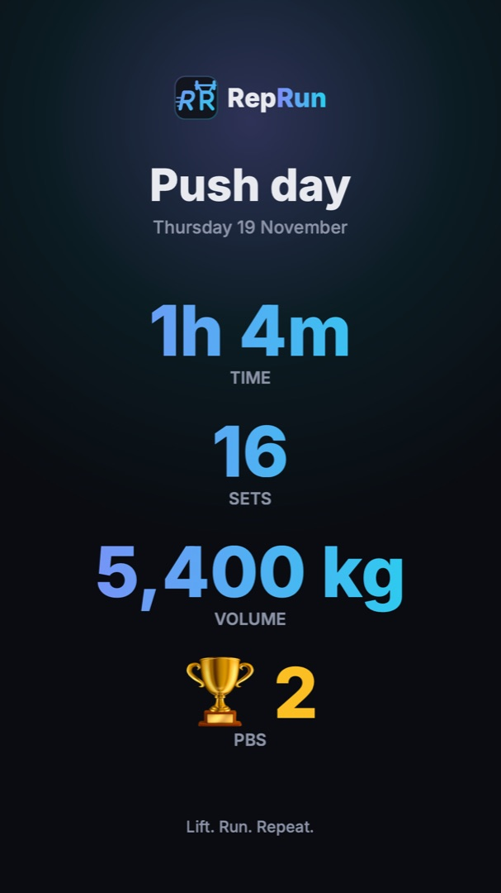
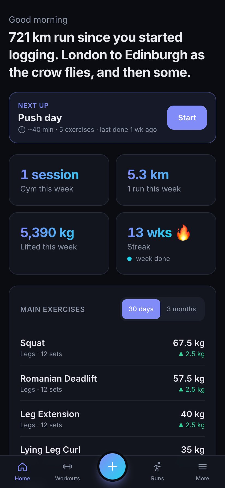
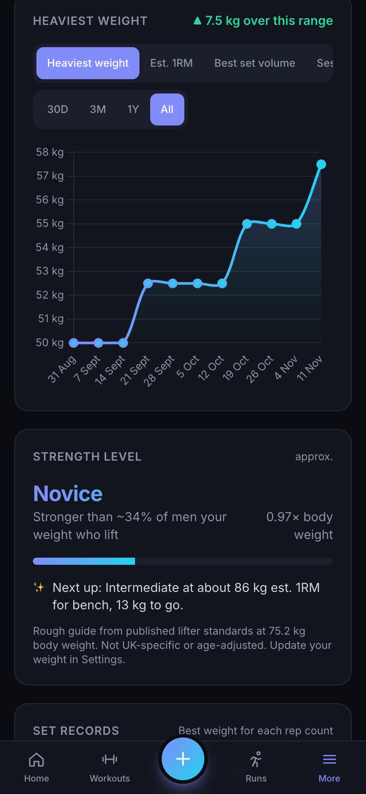

RepRun · brand book
One look, everywhere.
The app, the website, the share pictures and the reels all draw on what's on this page. Check it before adding a screen, a section, a post or a sentence.
The values here are the real ones: they live in src/index.css (the app) and site/public/index.html (the website). Change them there and here together.
01 · Colour
Near-black, two blues, and a gradient.
Dark is the look, and the default. The app also has a light theme (Settings → Appearance), with the same tokens in deeper shades. Indigo to cyan is the brand; green, red and gold only ever mean done, wrong and personal best. Tap a swatch to copy it.
Every colour is a token. No raw hex in a component.
White text never sits on accent, accent-2, bad or strava (2.98, 1.81, 2.77 and 3.40:1: all fail). A filled button or badge with white on it uses the -deep shade instead: accent-deep 4.88:1, accent-2-deep 5.36:1 (the gradient end, as on the Start workout button), bad-deep 4.83:1, strava-deep 5.18:1 (Connect Strava, Sync now). Indigo text, rings, borders and charts stay on accent, which reads better on the page.
faint is for large or throwaway text only (3.36:1).
Light theme (the app only; the website, share pictures and reels stay dark): bg #f5f6fa, surface #ffffff, surface-2 #eceef4, line #dfe2ea, ink #12151d, muted #596175, accent #4f46e5, accent-2 #0e7490, good #047857, bad #c81e1e, pb #a35a00, strava #c2410c. Every text colour reads at 4.5:1 or better on bg, surface and surface-2 (strava 4.46 on surface-2). The -deep fills are the same in both. They live in src/index.css under [data-theme="light"].
12 wks streak
02 · Typography
Inter, and only Inter.
400 for reading, 600 for labels and buttons, 700–800 for numbers and headlines. Big headlines pull their letters in (negative tracking). The website serves its own copies of Inter (site/public/fonts); the app loads it from Google Fonts.
Numbers that change or line up use tabular figures (tabular-nums), so a ticking timer doesn't wobble.
Mono is only for small labels like the one above this heading: 13px, uppercase, wide-spaced, cyan.
£0. Forever.
site display · 46–86 / 800 / −0.045em
Lifting and running, one app.
site h2 · 32–52 / 800 / −0.04em
Workouts
app page title · 24–30 / 700
5,390 kg
app stat · 24–30 / 700 / tabular
Main exercises
app card title · 13 / 600 / caps muted
Log your lifting and your running in one free app.
site body · 17 / 400
Rest 1:30 · 3 sets · last done 1 wk ago
app body · 14 / 400 muted
03 · the logger
label · mono 13 / 600 / caps cyan
03 · The mark
Two Rs: one running, one lifting.
The left R leans forward with speed lines; the right one stands up under a barbell. Gradient strokes on a near-black rounded tile, always.
Always on its dark tile. Don't recolour it, outline it, or put it on a light background.
Wordmark: the mark, then RepRun in Inter 800 with tight tracking (−0.02em). One word, capital R twice.
Android's maskable icon is the same mark at 84%, so a circle crop never clips the barbell.
 RepRun
RepRun

1632649604 · Buttons
Everything dips when you press it.
A phone has no hover, so a press is the only feedback a tap gets: buttons shrink to 96% while held. Wide rows light up instead, because shrinking a whole row looks like a glitch.
Tap targets are at least 44 × 44px (Apple's minimum).
A busy button keeps its width: the label goes invisible and a spinner sits on top. Nothing jumps.
One solid button per screen: the thing you came to do (Finish, Start, Save).
The website's primary button is the gradient with dark text and a soft indigo glow. The app keeps solid indigo so a busy screen stays calm.
05 · Components
The parts every screen is built from.
Rounded cards (16px corners) on a hairline border, numbers big and tabular, labels small and grey. Copies of the real ones in src/components/ui.tsx and src/pages/Log.tsx.
13 wks 🔥
Streak
5.3 km
1 run this week
Next up
Push day
~40 min · 5 exercises
Green = done. Gold = personal best. − / + step kg by 2.5, reps by 1. Last time lives behind the history button. Tap set 3.
settings rows (pages/Settings.tsx): grouped like the iPhone's own Settings, a tinted icon square, where it stands on the right, a chevron; each opens its own page with ‹ Settings to go back. The group's name sits above in small grey capitals.
exercise toolbar: rest · history, swap, remove (bordered, 44px)
switch rows (ReminderSwitches in lib/push.tsx): the whole row toggles, green on, grey off. In the intro they fold away under a quiet "Choose", so opting out is there but never in the way.
06 · Motion
Quick, springy, and off when you ask.
Everyday movement is fast (under a quarter of a second) so the app never feels slow; celebrations get longer. Most of it eases out with one curve, cubic-bezier(0.2, 0.9, 0.3, 1): a quick start and a soft landing.
Every animation and transition stops when the phone's Reduce Motion is on. Burst particles hide entirely.
Animate opacity and transform only. Never move layout.
Website hero: three real phone frames fanned (Make a routine, a workout, the finish), from the live demos (site/public/hero, re-take them when those screens change). Each looks operated: a ghost fingertip lands on the control, presses, and the next moment appears on top in 0.15s (the first frame never moves, so the phone never fades); 3s a moment on the sides, 2.5s on the workout (✓ set 1, + twice, ✓ set 2), the phones a second apart. The sides float 10px on a 6s loop and tilt 8°; hover straightens one. Paused off screen; first frames only with Reduce Motion; one phone under 560px. Other hero ideas: docs/ideas/hero.
Plate calculator (components/Plates.tsx): barbell lifts only. A muted text line under the current set ("25 + 15 each side", the bar on the right) with tiny plates in front; tapping it opens a sheet with the bar drawn. Plates read like a gym's: 25 bad, 20 accent, 15 pb, 10 good, 5 ink, smaller muted, heaviest tallest and nearest the middle. The picked bar is a filled accent-deep button.
Units: weights are stored in kg and shown in kg or lb. The unit above an exercise's weights in the logger is an accent text button ("kg ⇄"), and Settings → Profile has a two-part kg | lb switch (selected half filled accent-deep, white text). Never mix units in one line: an exercise in lb shows lb everywhere; totals use your default.
Website FAQ (#faq): one column of native <details>, 760px wide, a hairline between questions, an indigo chevron that turns over in 0.2s. Answers in grey, two sentences at most; more than one can be open. The whole section sits on a solid bg band with a hairline top and bottom, so the background glows don't show through.
Website screens strip: a slow marquee (50s a loop, pauses on hover), each screen 7.5% of the window wide (190 to 280px) so it never runs out on a wide screen. On a phone it's a swipe carousel instead: it glides on by itself at 40px a second while in view (looping), the screen in the middle full size and its neighbours shrunk to 82% and dimmed. A touch stops it and snaps to the nearest screen; it glides on 4s after the last swipe. Still with Reduce Motion.
Website phone demos are copies of the real screens with made-up numbers. They play by themselves only while on screen, and stop the moment someone touches them.
Website labels: an arrow arcs out of the number to its part of the phone (0.8s), a ring pulses there, then the words light up. One at a time, 3s each, on a loop. On a phone, only the current label shows, under the screen.
A timed set (a plank) gets a hold bar where the rest bar sits: its line fills cyan to green as the hold goes on (rest drains), and the clock turns green for the last 5 seconds. Its end beeps, ticks the set and starts rest.
The intro asks for a moment on each page the first time: Next fills left to right in the accent over 2.5s (linear), then lights up. Swiping ahead waits too; Back never does. Skip asks first ("Keep going" or "Skip").
No PB still gets a moment: a card over the finish screen with a big green tick (pop, then a soft ping ring) and a few words picked at random from a list of twenty (DONE_WORDS in motivation.ts: "Smashed it", "One in the bank", "Job done"…). It stays 2.5s in all, fading over the last 0.4s, or goes on a tap. Never both: a PB plays the PB moment instead.
Updates install themselves behind a centre card over the dimmed, blurred app (scrolling locked): a spinner and "Update in progress…", then a green disc that pops in and breathes with a ping ring, its tick drawing itself (0.32s), "Update complete" and up to three changelog lines cut to their first phrase. Done fills over 2.5s like the intro's Next and taps itself; a tap on the card holds it open. It waits for a finished workout, a closed sheet and no typing.
A PB gets the big moment, full screen over the finish screen, with confetti and what each PB beat. The app takes turns at random between four looks (never the same twice running): a trophy spotlight, a gold card per PB with that lift's line over time, the old best rolling up to the new one with a stamp, and a sheet from the bottom. The website shows the trophy. Tap to carry on; Reduce Motion skips it.
07 · Feel
It should feel like an app, not a website.
RepRun mostly lives on an iPhone home screen, used between sets with sweaty hands.
Big targets, pressed states, no grey tap flash, no pinch zoom, no zoom-in when a text box gets focus.
Haptics: iPhone only ticks for a real tap on a switch's label, so buttons that should tick carry <Tap />.
Swipe to delete works like Mail: the first swipe shows a bin, the bin deletes.
Respect the notch and home bar: anything fixed adds the safe-area inset.
Leave a gap under the status bar: content starts at the safe area plus 0.5–1rem, never exactly on it. iPhone blurs the strip just below the status bar.
The screen stays on during a workout. Rest-over beeps, and says what's next out loud.
Works with no signal: nothing logged is ever lost, it waits on the phone and uploads later.
08 · Voice
Plain words, like a mate at the gym.
Short sentences, UK English (kilos, metres, programme), and no jargon. Say what happens to the person, not how the code does it. The same rules cover the changelog in Settings → About.
Make big numbers human: "68 blue whales", "London to Edinburgh as the crow flies".
Emoji only where they carry meaning: 🔥 streak, 🏆 PB.
Errors say what happened and what to do next, and that the data is safe when it is.
09 · Assets
Everything made so far.
Right-click (or press and hold) to save. Screenshots use the demo's made-up data, never real history.
Logo and icons


Share card

Workout share pictures (src/lib/share.ts): four looks, swiped in this order in the share sheet. Tokens only: bg, surface, ink, muted, accent → accent-2, pb. The RR mark (favicon.svg) sits left of the wordmark at 1.7× its size. Web copies of a made-up "Push day".








Reels
Web copies. Full 1080p masters live with the Instagram files.
Carousel: "My gym app costs £0 a month"
Carousel: "Your PT's plan, in the app"
Store screenshots (Android install screen)



